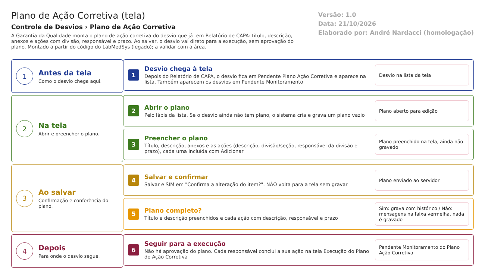

Fluxograma no arquivo 07-plano-de-acao-corretiva.fluxo.json, em 4 fases (Antes da tela, Na tela, Ao salvar, Depois). Etapas, na mesma ordem do arquivo:
- Etapa 1. Desvio chega à tela: depois do Relatório de CAPA, o desvio está em Pendente Plano Ação Corretiva e aparece na lista (Antes da tela).
- Etapa 2. Abrir o plano: pelo lápis da lista; se o desvio não tinha plano, o sistema cria e grava um plano vazio (Na tela).
- Etapa 3. Preencher o plano: título, descrição, anexos e as ações com divisão, responsável e prazo (Na tela).
- Etapa 4. Salvar e confirmar: Salvar e SIM em "Confirma a alteração do item?"; NÃO volta à tela sem gravar (Ao salvar).
- Etapa 5. Plano completo? (decisão): título, descrição e todas as ações com descrição, responsável e prazo. Sim: grava e segue. Não: mensagens na faixa vermelha e nada é gravado (Ao salvar).
- Etapa 6. Seguir para a execução: desvio em Pendente Monitoramento do Plano Ação Corretiva, sem aprovação do plano; cada responsável conclui sua ação na tela Execução do Plano de Ação Corretiva (Depois).
Saídas alternativas: Voltar sai sem gravar; não há cancelamento do desvio nem recusa do plano nesta tela.
Situações e histórico
Situações
- Entrada: Pendente Plano Ação Corretiva (vinda do Relatório de CAPA, RelatorioCapaController.cs:220). A lista também aceita Pendente Monitoramento do Plano Ação Corretiva (PlanoAcaoCorretivaRNCController.cs:65).
- Saída: Pendente Monitoramento do Plano Ação Corretiva (PlanoAcaoCorretivaRNCController.cs:224).
- Situação do próprio plano: nasce como Pendente Aprovação ao abrir a tela pela primeira vez (PlanoAcaoCorretivaRNCController.cs:160); só muda na tela de Monitoramento (Aprovada ou Reprovada).
- Situação de cada ação: Pendente ao ser criada (PlanoAcaoCorretivaRNCController.cs:352).
- Não há recusa nem cancelamento nesta tela. Se o plano ficar parado, o desvio continua em Pendente Plano Ação Corretiva.
O que grava na trilha de auditoria (histórico)
- Salvar o plano usa a gravação com histórico: o histórico é campo a campo, com valor antigo e novo, e inclui o desvio, o plano, as ações e a inclusão de anexos (PlanoAcaoCorretivaRNCController.cs:244; RepositoryBase.cs:100-102 e 272-390; inclusão de anexo em :424). O campo IdResponsavel do plano fica de fora de propósito (PlanoAcaoCorretivaRNCController.cs:242). Rodada 2 (22/10/2026): ao alterar uma ação já gravada, o histórico traz o valor antigo e o novo (prazo e responsável); a inclusão das ações no primeiro Salvar não aparece na janela Histórico (CT-GQ-N07-07 e N07-08, DV-GQ-036).
- Marcar uma ação ou anexo como removido (lixeira) também gera histórico (RepositoryBase.cs:308-317 e 433).
- Abrir a tela de um desvio sem plano grava o plano vazio com histórico de inclusão (PlanoAcaoCorretivaRNCController.cs:163).
O que não grava
- Justificativa: nenhuma é pedida nem gravada, mesmo quando o plano é alterado depois de ir ao monitoramento (PlanoAcaoCorretivaRNCController.cs:209 e 244).
- Impressão do relatório e visualização: sem registro (PlanoAcaoCorretivaRNCController.cs:268-294 e 389-404).
- Quem fez a última alteração do plano: o código atualiza a data de atualização do plano, mas não o usuário de atualização (PlanoAcaoCorretivaRNCController.cs:233; só o desvio recebe IdUsuarioAtualizacao em :222). A confirmar no teste, olhando o histórico.
Dados
Tabelas do banco
| Tabela | Colunas principais | Chaves e ligações | Fonte |
|---|---|---|---|
| TBL_REGISTRO_RNC | Situacao, DATA_ALTERACAO, ID_USUARIO_ALTERACAO | Guarda PlanoAcaoCorretivaRNC_Id (liga o desvio ao plano) | TBL_REGISTRO_RNC.sql:7, 26, 34 e 43 |
| TBL_PLANO_ACAO_CORRETIVA_RNC | AcaoCorretiva (título), Descricao, Observacao, Situacao, IdResponsavel, NomeResponsavel, LiberacaoPlanoAcaoCorretivaRNC_Id | Chave ID_PLANO_ACAO_CORRETIVA_RNC | TBL_PLANO_ACAO_CORRETIVA_RNC.sql:2-9 e 18-20 |
| TBL_ACAO_CORRETIVA | Descricao, IdResponsavel, NomeResponsavel, IdAreaResponsavel, NomeAreaResponsavel, DataPrazo, Situacao, LIXEIRA | Chave ID_ACAO_CORRETIVA; PlanoAcaoCorretivaRNC_Id liga ao plano; AvaliacaoPlanoAcaoCorretivaRNC_Id liga à execução | TBL_ACAO_CORRETIVA.sql:2-23 |
| TBL_ANEXO | DESCRICAO, ARQUIVO, TAMANHO, CHAVEDIRETORIO, TIPOCONTEUDO, LIXEIRA | RegistroNaoConformidade_Id liga o anexo ao desvio (também existe PlanoAcaoCorretivaRNC_Id, que esta tela não usa) | TBL_ANEXO.sql:2-19 e 45-47; AnexoController.cs; PlanoAcaoCorretivaRNCController.cs:317-330 |
| TBL_LOG_ALTERACAO_GQ e itens | Objeto, campo, valor antigo, valor novo, usuário, data, justificativa | O projeto de banco traz TBL_LOG_ALTERACAO, nome diferente do que o código usa (ver o documento interno e a pergunta ao DBA) | LogAlteracaoConfiguration.cs:16 |
Leituras e gravações em outros módulos
| Módulo | O que é lido ou gravado | Meio | Fonte |
|---|---|---|---|
| Principal | Lista de divisões/seções e seus responsáveis (para o campo Responsável) | API de áreas do Principal (AreaService.ListarAreas) | PlanoAcaoCorretivaRNCController.cs:185-201 e 425-443; AreaService.cs:23-32 |
| Principal | Nome da divisão do usuário conectado, a cada leitura do usuário logado | API Area/GetAreaName | GQControllerBase.cs:58-77; AreaService.cs:14-21 |
| Principal | Lista de usuários e dados do responsável do desvio (carregados, mas a tela não os mostra) | UsuarioService.ListarUsuarios e ObterUsuarioServiceHub | PlanoAcaoCorretivaRNCController.cs:166-178 |
| Principal | Etiqueta (TAG) do equipamento, só na impressão, quando o item do desvio é equipamento | EquipamentoService (API de equipamentos do Principal) | ServiceBloco2.cs:53-71; PlanoAcaoCorretivaRNCController.cs:279-280 |
| Produção e Estoque | Nada é lido ou gravado por esta tela | Não se aplica | Sem fonte (nenhuma chamada no controlador) |
| Arquivos | Anexos gravados em pasta do servidor, pela chave do anexo, e tentativa de envio a um serviço de armazenamento em nuvem | Pasta de upload e serviço S3 | UploadController.cs:41-70 |